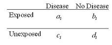
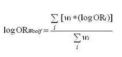
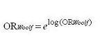
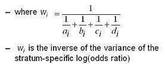

Summary Estimators: Woolf's Method
Lead Author(s): Jeff Martin, MD
This is one method for calculating summary adjusted estimators when making adjustments in the measure of association.
Woolf's Method for Adjusted Odds Ratio
In all of our studies, we are just taking a sample of the population and we know there is always the threat of sampling error.
- The potential for sampling error is best seen in the variance of the measure of association for each stratum.
Consequently, Woolf's Method is based on:
- Weighing each stratum according to its sampling error - giving the most weight to those strata that have the smallest variance.
Woolf's Method: In this method, we actually initially work with log of the odds ratio and the formula uses the weighted average.
Data for Woolf's Method

Step 1 - Weighted Average of the LOg odds ratio

1 - The weighted average of the different strata is the weighted average of log odds ratio for each of the strata. In other words, this is the sum of the products of each stratum-specific log odds ratio times its weight, all divided by the sum of the weights.
Step 2 - Expoteniate the log odds

2 - After you have taken the weighted average on the log scale, at the end you exponentiate this to get back to the native scale.
Step 3 - inverse of the log odds ratio

3 - The weight is not the variance of the log odds ratio per se but it is the inverse of the variance. So, what you see in the denominator here is the variance of the log odds ratios. This makes sense, right, because the bigger the variance, the inverse of the variance is small and thus a smaller weight. The smaller the variance, ie the more confident that you have nailed down the estimate, the inverse is larger - i.e. more weight.
Pros and Cons of Woolf's Method
Conceptually straightforward
Best when: number of strata is small sample size within each strata is large
Cannot be calculated when any cell in any stratum is zero
- because log(0) is undefined
- 0.5 cell corrections have been suggested but are subject to bias
You can find formulae for the Woolf’s approach for other measures of association, like a risk ratio, risk difference in textbooks and software documentation.
Mantel-Haenszel Method
Given the Woolf's Method problem with cells of zero, a second method, the Mantel-Haenszel method is more widely used.